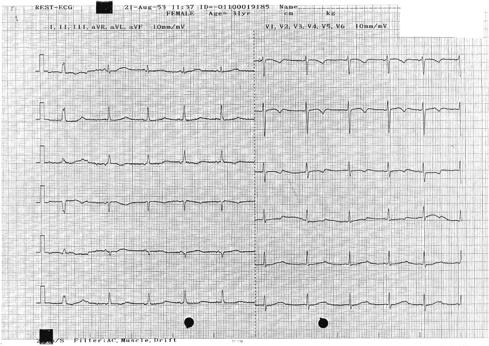
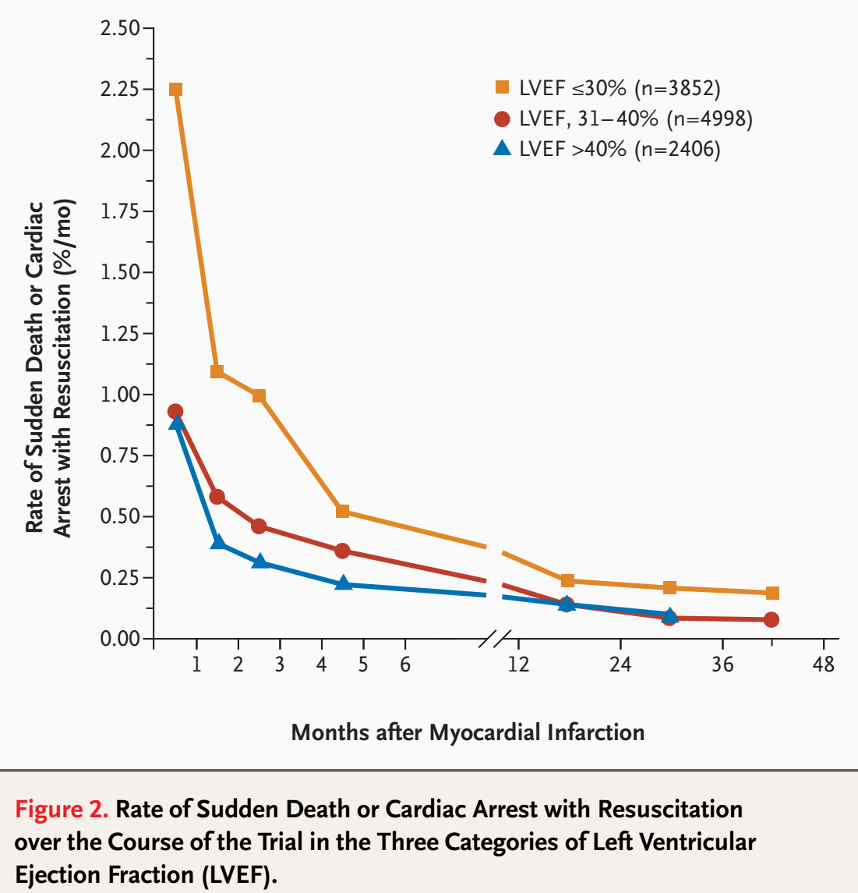
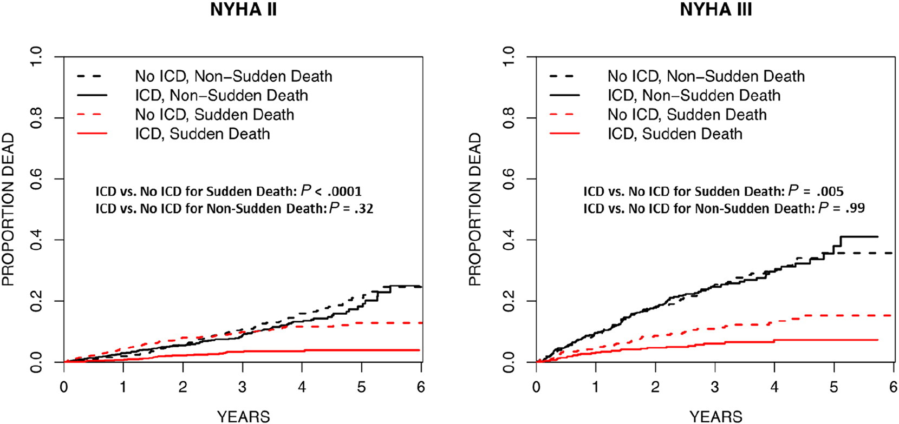

Implantable Cardioverter-Defibrillator (ICD) is ...


ICD is extremely effective in terminating ventricular arrhythmias.
Main Indications for ICD
Ischemic CM
non-ischemic CM
Brugada
Hypertrophic CM
2 most predictive RISKS for SCA are
LVEF and NYHA.

